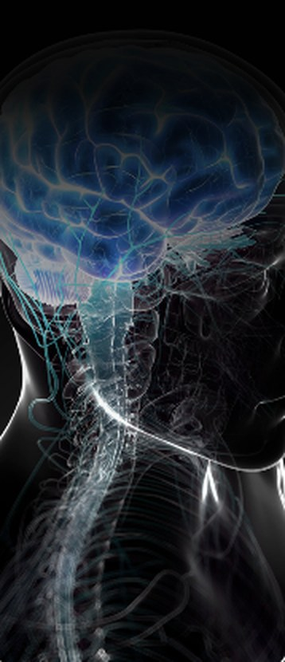

01
Erwartung
DyadIQ erfasst über kurze, wissenschaftlich fundierte Befragungen, welche Eigenschaften eine Person sich von einer Führungskraft bzw. einem Mitarbeitenden wünscht.
Viele Führungsbeziehungen scheitern nicht an mangelndem Willen, sondern an unterschiedlichen Vorstellungen davon, was gute Führungskräfte und gute Mitarbeitende ausmacht. DyadIQ macht diese Diskrepanz sichtbar – bevor sie zum Problem wird.

Unterschiedliche Erwartungen an Führung und Mitarbeiterschaft bleiben oft unausgesprochen – wirken sich aber messbar auf Zusammenarbeit und Bindung aus.
DyadIQ erfasst über kurze, wissenschaftlich fundierte Befragungen, welche Eigenschaften eine Person sich von einer Führungskraft bzw. einem Mitarbeitenden wünscht.
Parallel erfasst DyadIQ, wie eine Person die tatsächlich vorhandenen Eigenschaften der Führungskraft bzw. des Mitarbeitenden einschätzt.
DyadIQ erfasst zusätzlich per Befragung, wie die Beziehungsqualität erlebt wird, setzt alle Werte zueinander in Beziehung und leitet daraus eine konkrete Handlungsempfehlung ab.
DyadIQ basiert auf etablierten Konzepten aus der Führungsforschung und stellt die Auswertung automatisiert und verständlich in Berichtsform bereit – ohne zusätzlichen Analyseaufwand für Ihr Team.
Individuelles Angebot passend zur Teamgröße und Organisationsstruktur.